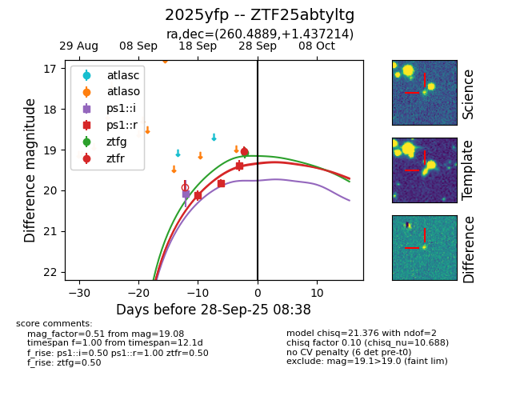
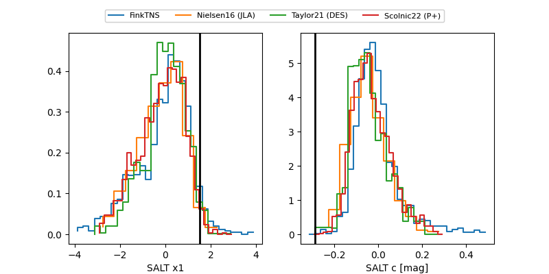

FINK: ZTF25abtyltg
Lasair: ZTF25abtyltg
ALeRCE: ZTF25abtyltg
TNS: 2025yfp
YSE: 2025yfp
2025yfp (yse,tns)
ZTF25abtyltg (ztf,fink)
equatorial (ra, dec) = (260.4889,+1.43721)
galactic (l, b) = (23.6449,+20.49076)


last ps1::i=20.09, ps1::r=19.39, ztfg=19.08, ztfr=19.04
1 ps1::i, 3 ps1::r, 1 ztfg, 1 ztfr detections